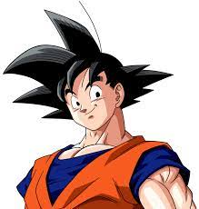

Our Reviews

@brandonprows
Poetic ending. Absolutely awe-inspiring. This part of the film is what seals the deal for this being the front runner for best picture. The ending to this movie had a profound impact on me, and weeks later after having seen it, I find myself continuously thinking about those final moments. What a magnificent film.